STARTER (for 2.0 kW Type) > INSPECTION |
| 1. INSPECT STARTER ASSEMBLY |
Perform the pull-in test.
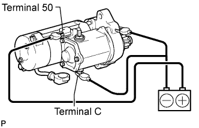 |
Remove the nut, then disconnect the lead wire from terminal C.
Connect the battery to the magnet starter switch as shown in the illustration. Check that the clutch pinion gear moves outward.
If the clutch pinion gear does not move, replace the magnet starter switch assembly.
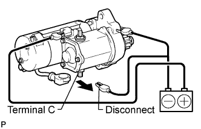 |
Perform the holding test.
With the battery connected as above with the clutch pinion gear out, disconnect the negative (-) lead from terminal C. Check that the pinion gear remains out.
If the clutch pinion gear returns inward, replace the magnet starter switch assembly.
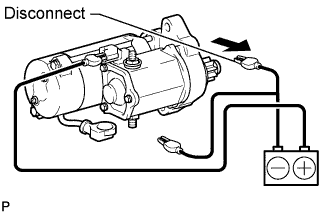 |
Inspect the clutch pinion gear return.
Disconnect the negative (-) lead from the starter housing. Check that the clutch pinion gear returns inward.
If the clutch pinion gear does not return inward, replace the magnet starter switch assembly.
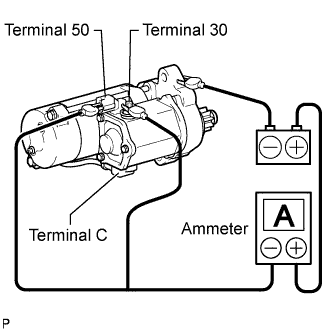 |
Perform the operation test without load.
Connect the field coil lead wire to terminal C.
Grip the starter in a vise.
Connect the battery and an ammeter to the starter as shown.
Check that the starter rotates smoothly and steadily while the pinion gear is moving out. Then measure the current.
| 2. INSPECT STARTER ARMATURE ASSEMBLY |
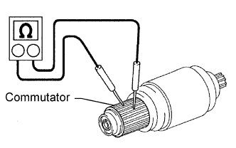 |
Inspect the commutator for an open circuit.
Measure the resistance according to the value(s) in the table below.
| Tester Connection | Condition | Specified Condition |
| Commutator | Always | Below 1 Ω |
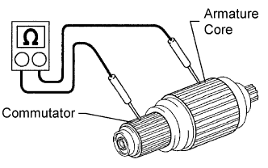 |
Inspect the commutator for a short circuit.
Measure the resistance according to the value(s) in the table below.
| Tester Connection | Condition | Specified Condition |
| Commutator - Armature core | Always | 10 kΩ or higher |
Inspect the commutator circle runout.
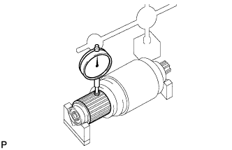 |
Place the commutator on V-blocks.
Using a dial indicator, measure the circle runout.
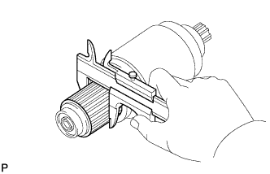 |
Using a vernier caliper, measure the commutator diameter.
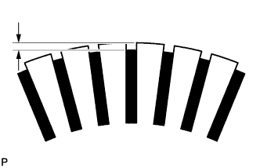 |
Measure the undercut depth of the commutator.
| 3. INSPECT STARTER YOKE ASSEMBLY |
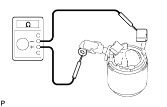 |
Inspect for an open circuit.
Measure the resistance according to the value(s) in the table below.
| Tester Connection | Condition | Specified Condition |
| Terminal C wire - Brushes | Always | Below 1 Ω |
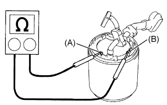 |
Inspect the shunt coil for an open circuit.
Measure the resistance according to the value(s) in the table below.
| Tester Connection | Condition | Specified Condition |
| Terminal (A) - Terminal (B) | 20°C (68°F) | 1.5 to 1.9 Ω |
| 4. INSPECT BRUSH |
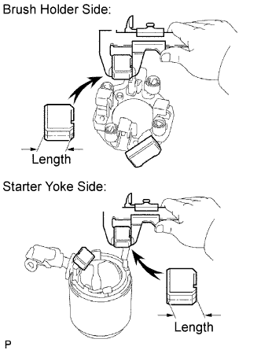 |
Using a vernier caliper, measure the brush length.
| 5. INSPECT STARTER BRUSH HOLDER ASSEMBLY |
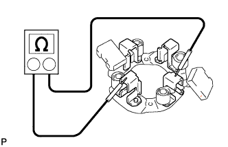 |
Measure the resistance according to the value(s) in the table below.
| Tester Connection | Condition | Specified Condition |
| Positive brush holder - Negative brush holder | Always | 10 kΩ or higher |
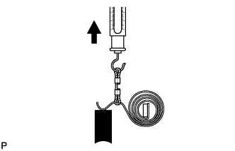 |
Inspect the load of the brush spring.
Take a pull scale reading immediately after the brush spring separates from the brush.
| 6. INSPECT STARTER CLUTCH SUB-ASSEMBLY |
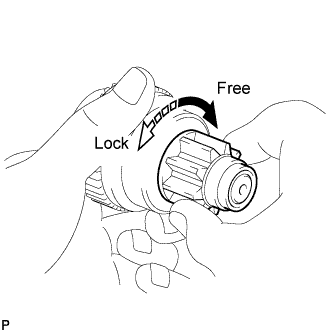 |
Check that the starter clutch cannot be rotated counterclockwise, and can be rotated clockwise.
If the starter clutch is not as specified, replace the starter clutch sub-assembly.
Turn the bearing by hand while applying inward force.
If resistance is felt or the bearing sticks, replace the starter clutch sub-assembly.
| 7. INSPECT MAGNET STARTER SWITCH ASSEMBLY |
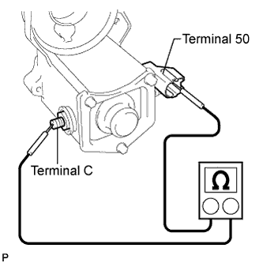 |
Inspect the pull-in coil.
Measure the resistance according to the value(s) in the table below.
| Tester Connection | Condition | Specified Condition |
| Terminal 50 - Terminal C | Always | Below 1 Ω |
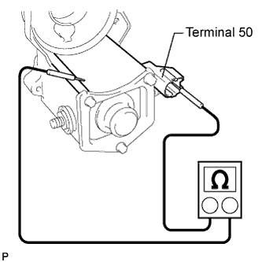 |
Inspect the holding coil.
Measure the resistance according to the value(s) in the table below.
| Tester Connection | Condition | Specified Condition |
| Terminal 50 - Switch body | Always | Below 2 Ω |